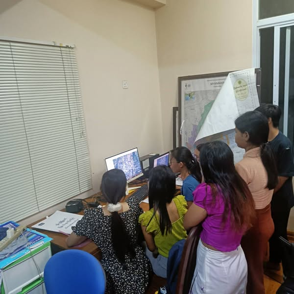
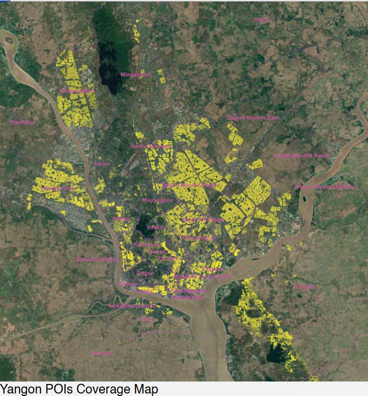
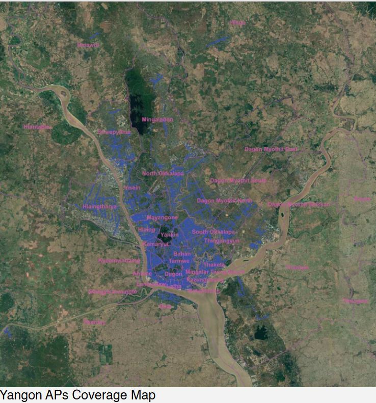
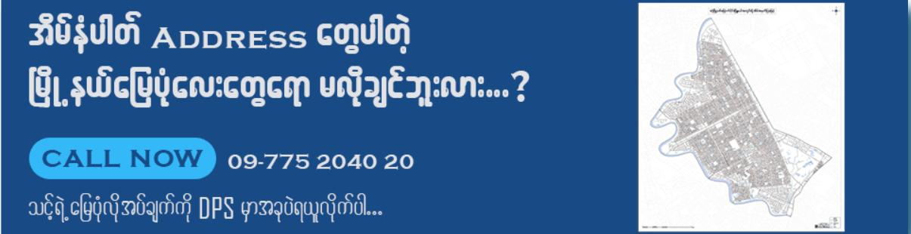
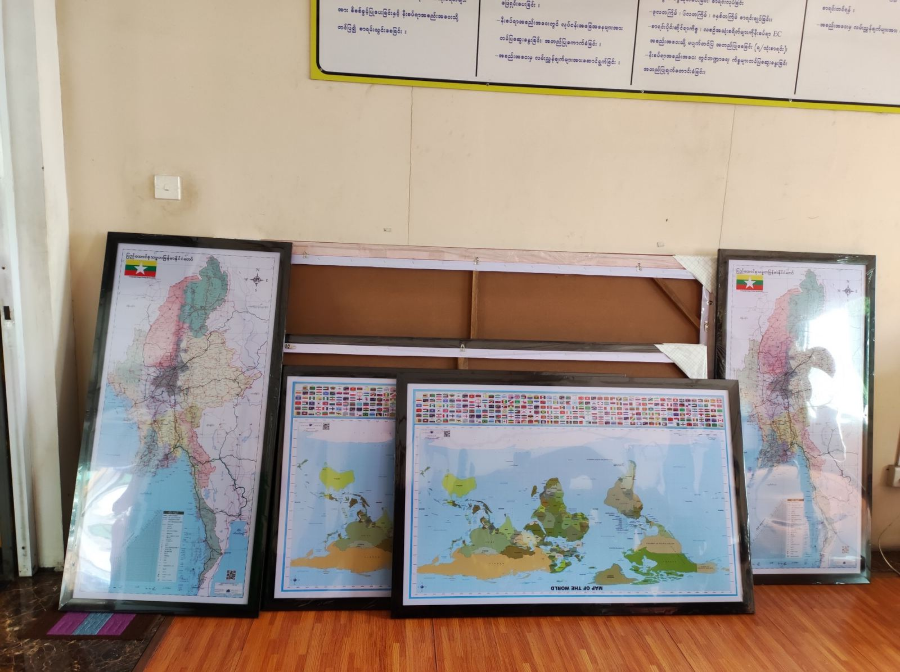
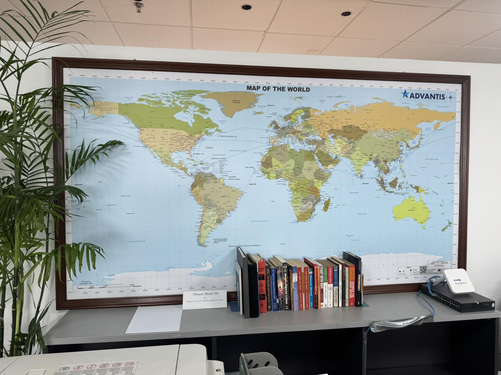

Professional GIS & Mapping Solutions
DPS သည် 1996 ခုနှစ်တွင် ၎င်း၏ မြေပုံနှင့် လမ်းညွှန်လုပ်ငန်းကို စတင်ခဲ့ပြီး မြို့တော်တွင် အကောင်းဆုံး လမ်းညွှန်ဖြစ်လာစေရန် ရည်ရွယ်ပါသည်။ Global Oil and Gas ကုမ္ပဏီ Royal Dutch Shell မှ အသိပညာဖြင့် လက်နက်ကိုင်ဆောင်ကာ ရန်ကုန်မြေပုံ၊ မန္တလေးမြေပုံနှင့် နေပြည်တော်မြေပုံတို့အတွက် မြေပြင်ဒေတာရယူရန် လူငယ်တစ်စုက စတင်ခဲ့ကြသည်။
Primary Coverage
- ရန်ကုန်မြေပုံ မြို့ပြနှင့် စီးပွားဖြစ်
- မန္တလေးမြေပုံ ယဉ်ကျေးမှုနှင့်ကုန်သွယ်မှု
- နေပြည်တော် အုပ်ချုပ်ရေးစင်တာ
ကျွန်ုပ်တို့၏ အထူးဝန်ဆောင်မှုများ
မြေပုံဆွဲခြင်း
သင်၏ အစည်းအဝေးခန်းများ၊ ရုံးခန်း သို့မဟုတ် အခြားနေရာများကို ကျွန်ုပ်တို့၏ မြင့်မားသော ရုပ်ထွက်၊ စိတ်ကြိုက်ပြင်ဆင်နိုင်သော မြေပုံများဖြင့် အလှဆင်ပါ။

GIS Map
DPS မှ ကျွန်ုပ်တို့သည် ပထဝီဝင်သတင်းအချက်အလက်စနစ် (GIS) ဖြင့် မြေပုံပြုလုပ်ခြင်းနှင့် ဒေတာသိုလှောင်ခြင်းတွင် ပါဝင်ဆောင်ရွက်နေပါသည်။ ကျွန်ုပ်တို့၏ပထမဆုံးပရောဂျက်သည် 1998 ခုနှစ်တွင် ဂြိုလ်တုမြေပုံများရယူရန်ဖြစ်သည်။


GPS Tracker
DPS တွင် သင့်လိုအပ်ချက်များနှင့် ကိုက်ညီမည့် GPS ခြေရာခံကိရိယာ အမျိုးအစားများ ရှိပါသည်။ အခြေခံလုပ်ဆောင်ချက်များဖြင့် ခြေရာခံစနစ်မှ စတင်၍ ဗီဒီယိုများကို အချိန်နှင့်တစ်ပြေးညီ ကြည့်ရှုနိုင်သည့် ကင်မရာပါသော ယာဉ်ခြေရာခံစနစ်အထိ။
Data Collection Service
ကျွန်ုပ်တို့သည် Point of Address ဒေတာစုဆောင်းခြင်း၊ ဖြန့်ဖြူးခြင်းဝန်ဆောင်မှုများအတွက် ဆိုင်ဒေတာစုဆောင်းခြင်း၊ လိပ်စာဒေတာစုဆောင်းခြင်းများအတွက်ဝန်ဆောင်မှုပေးပါသည်။

Design & Printing Service
ကျွန်ုပ်တို့၏ အိမ်တွင်းရှိ ဒီဇိုင်နာများနှင့် သင့်စိတ်ကြိုက် ဒီဇိုင်းနှင့် ပုံနှိပ်ပစ္စည်းများကို ရယူလိုက်ပါ။ ကျွန်ုပ်တို့၏ထုတ်ကုန်များသည် ရောင်စုံလက်ကမ်းစာစောင်များ၊ စီးပွားရေးကတ်များ၊ ပရိုမိုးရှင်းပစ္စည်းများ၊ ကျွန်ုပ်တို့၏ဖောက်သည်များကို စိတ်ကျေနပ်မှုမြင့်မားစေသည့် အမှတ်တံဆိပ်ပစ္စည်းမျုံနှိပ်ပစ္စည်းများကို ရယူလိုက်ပါ။


Website Service
ကျွန်ုပ်တို့သည် သင့်တင့်သောနှုန်းထားများဖြင့် ပရော်ဖက်ရှင်နယ် ဝဘ်ဆိုဒ်ဒီဇိုင်းဝန်ဆောင်မှုကို ပေးဆောင်ပါသည်။ သင့်အမှတ်တံဆိပ်ဖြင့် ကုမ္ပဏီဝဘ်ဆိုဒ် သို့မဟုတ် အွန်လိုင်းစျေးဝယ်နှင့် ဘလော့ဂ်များကဲ့သို့သော သင့်စိတ်ကူးတစ်ခုခုကို ရယူလိုက်ပါ။
Websiteနမူနာများကိုကြည့်ရန်linkကိုနှိပ်ပါ။ Websiteနမူနာများကိုကြည့်ရန်linkကိုနှိပ်ပါ။


GIS Data Analysis နှင့် အခြား Related Services
GIS (Geographic Information System) သည် ဒေတာများကို ပထဝီဒေသအခြေပြု ရုပ်သံပြဖော်ပြခြင်းနှင့် ဝိသေသပုံစံများကို နားလည်နိုင်ရန်အတွက် အထူးသင့်လျော်သောနည်းပညာတစ်ခုဖြစ်သည်။ GIS Data Analysis သည် ဒေတာများ၏ အချက်အလက်ဆိုင်ရာ ဆန်းစစ်ခြင်းနှင့် လေ့လာခြင်းလုပ်ငန်းစဉ်ဖြစ်ပြီး၊ တိကျမှုမြင့်မားသော အချက်အလက်များပေါ်မူတည်၍ အဓိကဆုံးဖြတ်ချက်များကို ချမှတ်နိုင်စေသည်။
Spatial Data Analysis (ပထဝီဒေသဆိုင်ရာဒေတာခွဲခြမ်းစိတ်ဖြာခြင်း)
- တည်နေရာအခြေပြု ဒေတာများကို စီမံခန့်ခွဲခြင်း။
- ပထဝီဒေသဆိုင်ရာပုံစံများ၊ နယ်နိမိတ်များ၊ လမ်းကြောင်းများနှင့် အခြားသော ပုံစံဆိုင်ရာ အချက်အလက်များကို ဆန်းစစ်ခြင်း။
Mapping Services (မြေပုံဖန်တီးခြင်းဝန်ဆောင်မှုများ)
- လိုအပ်သောဒေသများအတွက် မြေပုံများကို ထုတ်လုပ်ပေးခြင်း။
- စီးပွားရေး၊ စီမံခန့်ခွဲမှု၊ သဘာဝပတ်ဝန်းကျင်အချက်အလက်များအတွက် စိတ်ကြိုက်မြေပုံများဖန်တီးပေးခြင်း။
Remote Sensing Analysis
- ဂြိုဟ်တုပုံရိပ်များနှင့် Drone Data ကို အသုံးပြုပြီး ပတ်ဝန်းကျင်နှင့် သဘာဝအခြေအနေများကို အကဲဖြတ်ခြင်း။
Database Management (ဒေတာဘေ့စ်စီမံခန့်ခွဲမှု)
- GIS ဒေတာများအတွက် အခြေခံ ဒေတာစနစ်များ တည်ဆောက်ခြင်းနှင့် စီမံခန့်ခွဲခြင်း။
- ဒေတာများကို အလွယ်တကူ ရှာဖွေမှတ်တမ်းတင်နိုင်စေရန် အဆင်ပြေစေသော စနစ်များဖွံ့ဖြိုးပေးခြင်း။
Consultation Services (အတိုင်ပင်ခံဝန်ဆောင်မှုများ)
- GIS ဆိုင်ရာလက်တွေ့အကောင်အထည်ဖော်ရေးအတွက် အကြံပေးခြင်း။
- စီးပွားရေးလုပ်ငန်းများနှင့် စီမံခန့်ခွဲမှုဆိုင်ရာ ပြဿနာများကို GIS နည်းပညာဖြင့် ဖြေရှင်းနိုင်ရန် အကြံဉာဏ်ပေးခြင်း။
GIS Related အခြားဝန်ဆောင်မှုများ
Surveying Services
- ဒေသတစ်ခုလုံးကို အတိုင်းအတာမူတည်၍ မျဉ်းခြေများနှင့် အရည်အချင်းများကို တိုင်းတာပေးခြင်း။
Land Use Planning
- မြေယာအထောက်အထားအခြေပြု စီမံကိန်းများ ဖွံ့ဖြိုးရေးအတွက် အထောက်အကူပေးခြင်း။
Environmental Impact Assessment (EIA)
- သဘာဝပတ်ဝန်းကျင်အပေါ် သက်ရောက်မှုအကဲဖြတ်မှုများ ဆောင်ရွက်ပေးခြင်း။
Customized GIS Solutions
- အစိုးရအဖွဲ့အစည်းများ၊ စီးပွားရေးလုပ်ငန်းများနှင့် သီးသန့်လုပ်ငန်းများအတွက် စိတ်ကြိုက် GIS Solution များ ဖန်တီးပေးခြင်း။
မြေပုံဖန်တီးမှု
မြေပုံဖန်တီးမှုသည် ဒေသတစ်ခု၏ နယ်နိမိတ်၊ မျဉ်းခြေများနှင့် ဒေတာများကို မြင်သာစွာဖော်ပြရန် အသုံးပြုသော နည်းလမ်းတစ်ခုဖြစ်ပြီး၊ စီမံခန့်ခွဲမှုနှင့် ဆုံးဖြတ်ချက်ချခြင်းများတွင် အရေးပါသော အထောက်အကူပေးသော နည်းစနစ်တစ်ခုဖြစ်သည်။
Mapping Services (မြေပုံဖန်တီးခြင်း ဝန်ဆောင်မှုများ)
- လိုအပ်သောဒေသများအတွက် မြေပုံများကို ထုတ်လုပ်ပေးခြင်း။
- စီးပွားရေး၊ စီမံခန့်ခွဲမှုနှင့် သဘာဝပတ်ဝန်းကျင်ဆိုင်ရာ အချက်အလက်များအတွက် စိတ်ကြိုက်မြေပုံများ ဖန်တီးပေးခြင်း။
Customized Mapping Solutions
- သီးသန့်အဖွဲ့အစည်းများနှင့် လုပ်ငန်းဆိုင်ရာလိုအပ်ချက်များအတွက် စိတ်ကြိုက်မြေပုံဖန်တီးပေးခြင်း။
- နယ်နိမိတ်ဆိုင်ရာ စီမံခန့်ခွဲမှုနှင့် ဒေတာများ၏ မျဉ်းခြေဖော်ပြမှုများ။
ပုံနှိပ်နှင့် ဒီဇိုင်းဝန်ဆောင်မှု
GIS (Geographic Information Systems) နှင့် ပတ်ဝန်းကျင်ဆိုင်ရာ ဒီဇိုင်းများ ဖန်တီးခြင်းနှင့် ပုံနှိပ်ခြင်းဝန်ဆောင်မှုသည် သင်၏ ပတ်ဝန်းကျင်ဆိုင်ရာ ဒေတာများကို မြင်သာပြသရန်အတွက် အထောက်အကူပြုသည်။ 2D နှင့် 3D မြေပုံများ၊ အထူးဒီဇိုင်းများဖော်ပြမှုတို့ကို အကောင်းဆုံးနည်းစနစ်ဖြင့် တင်ဆက်ပေးပါသည်။
Printing Services (ပုံနှိပ်ဝန်ဆောင်မှုများ)
- မြေပုံများနှင့် GIS ဒေတာအခြေပြု ဒီဇိုင်းများကို စိတ်ကြိုက်ပုံနှိပ်ပေးခြင်း။
- စီးပွားရေးလုပ်ငန်းများအတွက် အထူးဒီဇိုင်းများ ဖန်တီးခြင်းနှင့် ပုံနှိပ်ခြင်း။
Design Services (ဒီဇိုင်းဖန်တီးဝန်ဆောင်မှုများ)
- 2D နှင့် 3D မြေပုံဒီဇိုင်းများ ဖန်တီးခြင်း။
- GIS သုံးလိုအပ်ချက်များအတွက် အထူးဒီဇိုင်းဖန်တီးပေးခြင်း။
3D Mapping & Visualization
- 3D မြေပုံများကို တိကျသော အချက်အလက်များနှင့်ဖန်တီးပေးခြင်း။
- အဓိက ဒေတာအခြေပြု သဘာဝပတ်ဝန်းကျင်နှင့် အဆောက်အဦများအတွက် 3D ဖော်ပြမှုများ။
Online Map Services
dpsmap.com မှတစ်ဆင့် မြေပုံများကို ဒစ်ဂျစ်တယ်ပုံစံဖြင့် ရှာဖွေကြည့်ရှုနိုင်စေရန် ဝန်ဆောင်မှုပေးပါသည်။ ယခင်ထက် ပိုမိုလွယ်ကူစွာ မြေပုံအချက်အလက်များကို ရရှိနိုင်စေရန်၊ ရေရှည်အသုံးပြုနိုင်သော မြေပုံအရင်းအမြစ်များကို ဖန်တီးပေးခြင်းဖြင့် စီးပွားရေးလုပ်ငန်းများနှင့် အသုံးပြုသူများအတွက် အကျိုးကျေးဇူးများ အထူးထိရောက်စေပါသည်။
Features of Our Online Map Services
- တိကျမှန်ကန်သော ဒစ်ဂျစ်တယ်မြေပုံများကို မည်သည့်နေရာမှ ကြည့်ရှုနိုင်ခြင်း။
- မြေပုံအချက်အလက်များကို လိုအပ်သလို ဖန်တီးပြီး စိတ်ကြိုက် ပြန်လည်အသုံးပြုနိုင်ခြင်း။
Advantages of Using dpsmap.com
- မြေပုံများကို အချိန်နှင့်တပြေးညီ နေရာတစ်ခုစီအလိုက် အချက်အလက်များဖြင့် အပ်ဒိတ်လုပ်နိုင်ခြင်း။
- စီးပွားရေးနှင့် စီမံခန့်ခွဲမှုအတွက် အကောင်းဆုံး GIS အချက်အလက်များ ရယူနိုင်ခြင်း။
Sustainability of Online Map Resources
- ရေရှည်အသုံးပြုနိုင်သော မြေပုံအရင်းအမြစ်များကို ဖန်တီးပြီး၊ အချိန်နှင့်အမျှ အသုံးပြုသူများအတွက် ပိုမိုစိတ်ချရမှု ပေးနိုင်ခြင်း။
- အပြောင်းအလဲများအထိရောက်ဆုံး နားလည်နိုင်စေပြီး၊ လိုအပ်သောဒေတာများကို လွယ်ကူစွာရယူနိုင်စေခြင်း။